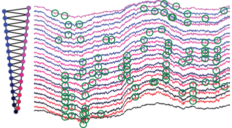

Category: Spiking
Software

Brian
A Python simulator for spiking neural networks.

KlustaSuite
Spike sorting.
Publications
Preprints
2021
-
Perez-Nieves N, Leung VCH, Dragotti PL, Goodman DFM (2021)
Neural heterogeneity promotes robust learning.
Nature Communications -
Zenke F, et al. (2021)
Visualizing a joint future of neuroscience and neuromorphic engineering.
Neuron
2020
-
Hathway P (2020)
Biologically-inspired machine learning approaches to large-scale neural data analysis.
PhD thesis, Imperial College London -
Stimberg M, Goodman DFM, Nowotny T (2020)
Brian2GeNN: a system for accelerating a large variety of spiking neural networks with graphics hardware.
Scientific Reports
2019
-
Perez-Nieves N, Leung VCH, Dragotti PL, Goodman DFM (2019)
Advantages of heterogeneity of parameters in spiking neural network training.
Cognitive Computational Neuroscience -
Stimberg M, Brette R, Goodman DFM (2019)
Brian 2, an intuitive and efficient neural simulator.
eLife -
Stimberg M, Goodman DFM, Brette R, De Pittà M (2019)
Modeling neuron-glia interactions with the Brian 2 simulator.
Springer - + 1 conference paper
2018
-
Goodman DFM, Winter IM, Léger AC, de Cheveigné A, Lorenzi C (2018)
Modelling firing regularity in the ventral cochlear nucleus: mechanisms, and effects of stimulus level and synaptopathy.
Hearing Research -
Blundell I, et al. (2018)
Code Generation in Computational Neuroscience: A Review of Tools and Techniques.
Frontiers in Neuroinformatics
2016
-
Rossant C, et al. (2016)
Spike sorting for large, dense electrode arrays.
Nature Neuroscience
2014
-
Kadir SN, Goodman DFM, Harris KD (2014)
High-dimensional cluster analysis with the masked EM algorithm.
Neural Computation -
Stimberg M, Goodman DFM, Benichoux V, Brette R (2014)
Equation-oriented specification of neural models for simulations.
Frontiers in Neuroinformatics
2013
2012
-
Brette R, Goodman DFM (2012)
Simulating spiking neural networks on GPU.
Network: Computation in Neural Systems
2011
-
Brette R, Goodman DFM (2011)
Vectorised algorithms for spiking neural network simulation.
Neural Computation -
Fontaine B, Goodman DFM, Benichoux V, Brette R (2011)
Brian Hears: online auditory processing using vectorisation over channels.
Frontiers in Neuroinformatics -
Rossant C, Goodman DFM, Fontaine B, Platkiewicz J, Magnusson AK, Brette R (2011)
Fitting neuron models to spike trains.
Frontiers in Neuroscience -
Kremer Y, Léger J-F, Goodman D, Brette R, Bourdieu L (2011)
Late emergence of the vibrissa direction selectivity map in the rat barrel cortex.
Journal of Neuroscience
2010
-
Goodman DFM, Brette R (2010)
Spike-timing-based computation in sound localization.
PLoS Computational Biology -
Goodman DFM, Brette R (2010)
Learning to localise sounds with spiking neural networks.
Advances in Neural Information Processing Systems -
Rossant C, Goodman DFM, Platkiewicz J, Brette R (2010)
Automatic fitting of spiking neuron models to electrophysiological recordings.
Frontiers in Neuroinformatics
2009
-
Brette R, Goodman D (2009)
Brian: a simple and flexible simulator for spiking neural networks.
The Neuromorphic Engineer
Videos